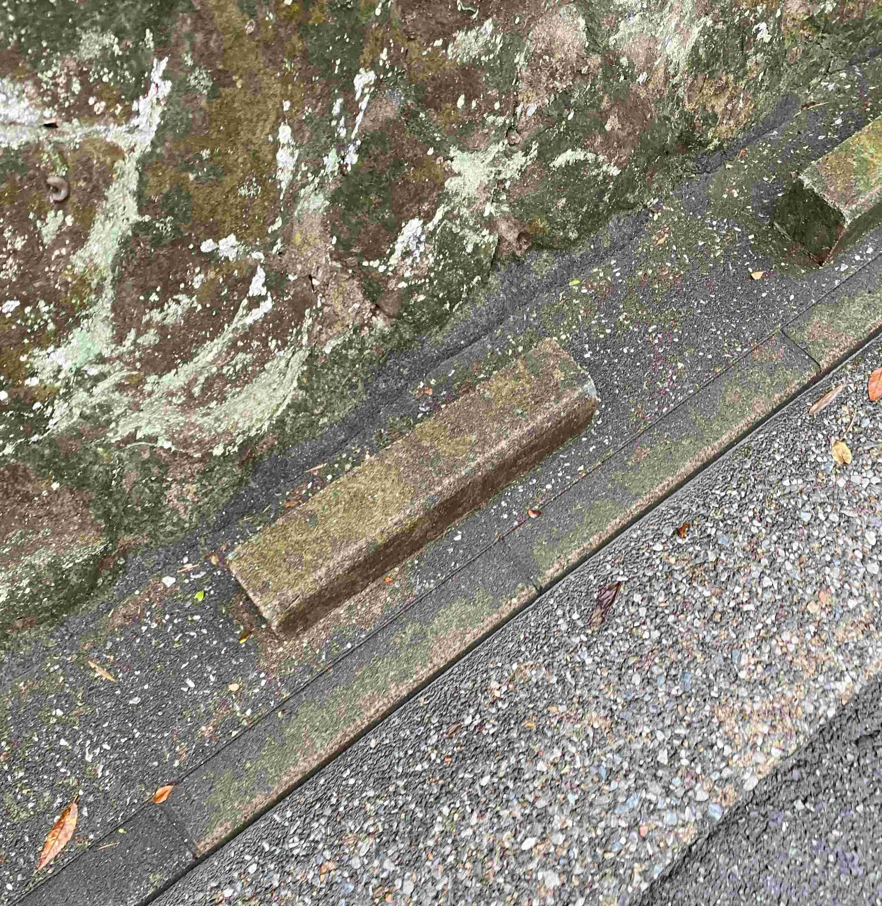

変な車止め？

普段はこの道を通るときはまるで気にせずに素通りしていました。
今回のフィールドワークで散策したとき、
よく考えれば用途が全く考えられなかった純粋階段のようなもののように感じられたため写真に残しました。
普段はこの道を通るときはまるで気にせずに素通りしていました。
今回のフィールドワークで散策したとき、
よく考えれば用途が全く考えられなかった純粋階段のようなもののように感じられたため写真に残しました。